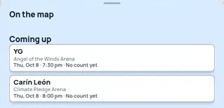
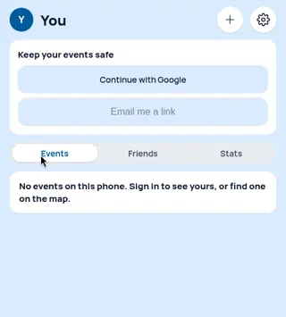

02 · Empty states (Seattle map sheet and You tab)
When Seattle has no events, the sheet shows an "On the map" heading with nothing under it, and there's no ? button. The You tab is one sentence and a big blank area. "find one on the map" isn't a link, and it says "events" though the tab holds nights. NN/g on empty states: say why it's empty, say what will show up here, and give one direct next step.
Current09-seattle-list-empty-on-the-map.png · 17-you-tab-empty-state.png (also 08)
Seattle · map sheet (09)

You tab (17)

The heading has no content under it, so it reads like a load that failed. On You, the sign-in card sits above an empty list, and the one sentence has no button to tap.
Option 1 · Say why + one next stepPlain sentence, one button, nothing else
Seattle · map sheet
On the map
Nothing on the map tonight
No big events in Seattle on Wed, Oct 7. Thursday has 2.
Coming up
YG
Angel of the Winds Arena
Thu, Oct 8 · 7:30 pm
You tab
No nights logged yet
Tap I was there on any past night. It shows up here with that night's friction stamp.
Find a night on the map
Keep your nights safeSign in
Seattle: the heading gets a real line and a jump to the next night that has events. The ? still shows. You: says what lands here (nights marked I was there), gives one gold button and a quiet "+ Log a night by date" (same as the + up top). Sign-in moves to one row below, since it isn't what you came here for. The Friends and Stats tabs stay.
Option 2 · Show the shape of what's comingA short week table and a faded example log
Seattle · map sheet
On the map · No events tonight
| This week in Seattle | Events | Read |
|---|
| Thu, Oct 8 | 2 | Chill · 1/10 |
| Fri, Oct 9 | 3 example | Light · 4/10 |
| Sat, Oct 10 | 2 example | Light · 4/10 |
Reads use the locked words. The app shows these days as 1.4 Chill, 4.2 Spicy, 3.5 Mild today.
You tab
Your nightsexample rows
| Date | Night | Read |
|---|
| Sat, Oct 3 | Dodgers (NLDS G1) | Cooked · 10/10 |
| Sun, Oct 4 | Dodgers (NLDS G2) | Brutal · 7/10 |
Your log starts with your first I was there.
Find a night
Keep your nights safeSign in
Seattle: the empty night turns into a small table of the next few nights (she likes tables), so there's always a next tap. You: faded rows marked as examples show what a log will look like, Letterboxd-style. Rows and counts are labeled examples. Trade-off: it's busier than Option 1, and fake rows must never look like real data.